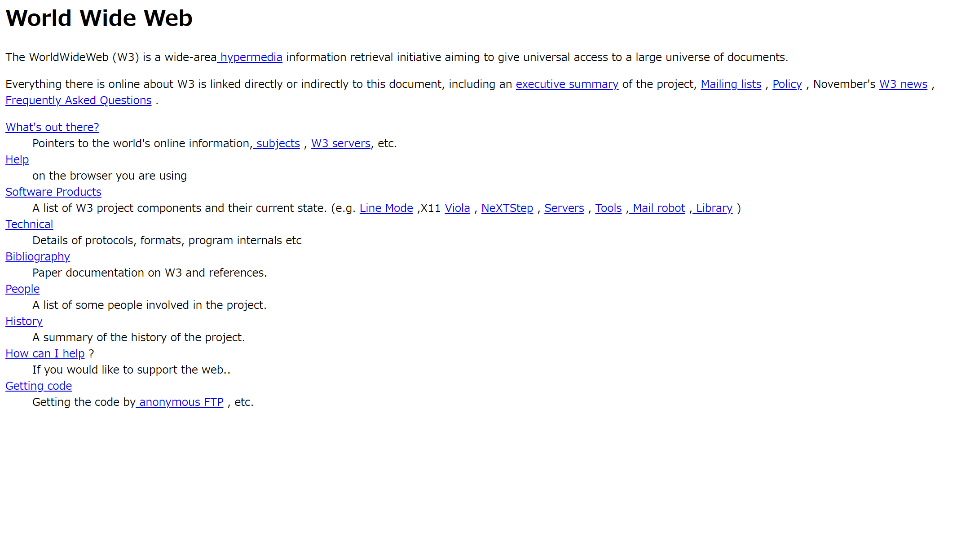

デザインとは何か
デザインとは何か
私たちの周囲にあるものは、すべてデザインが施されています。例えば、スマートフォンやマウスは私たちが使いやすい形に、またペットボトルは私たちが飲み物の味を連想できるようなパッケージや、持ち運びやすい凹凸のキャップになっています。
そう考えてみると、あらゆるものは利用者目線で作られています。つまり、人のために最適な形を表現することこそがデザインなのです。
デザインの必要性
- 伝えたいことが伝わりやすくなる
- 言葉では伝えられない情報を伝えられる
- 効率性や安全性の向上など…
つまり、デザインはコミュニケーション手段の1つでもあるのです。
デザインの歴史
Webデザインの歴史
Webデザインは、今日の生活のおいて身近になっていますが、歴史は浅く約30年ほどしか経っていません。世界初のwebサイトは1991年に公開された、WWW(World Wide Web)です。
Webの起源とも呼べるサイトですが、コンテンツはほぼテキストのみで構成され、今日では当たり前の「デザインレイアウト」も存在していませんでした。 遅い通信速度に対応するために、軽量でテキストのみのシンプルなデザインが使われていました。
1990年代では、テキストを段や列に分けるというナビゲーション機能を持たせる技術が浸透しました。
2000年代に入ると、CSSへの対応が進みました。Webデザイナーがデザインから開発をするなど比較的自由となり、divタグが普及し、Webサイトはメンテナンスのしやすさと読み込み時間の短縮が可能になりました。
2000年代中期ではWeb2.0が登場し、Webを端末やOS、アプリケーションの制約を受けずに結びつけられるようになりました。個人レベルで発信できるようになったことで「YouTube」や「Twitter」などのSNSサービスが世界中に広がりました。コンテンツはSEO重視に変化しました。
今日では、スマートフォンがWebデザインの対象となってきました。フラットデザインや、マテリアルデザインが登場し、多様化するデバイスに対応できるようになりました。
ここから先は、Webサイトにおけるデザインについて考えていきます。
文字の大きさ
ウェブサイトの基本的なフォントサイズは16pxと言われていますが、そのウェブサイトのターゲットに合わせて適切な大きさに変えることが好ましいです。また、「フォントサイズを変更するボタン」をサイトに設置することも有効な対策です。その場合、フォントサイズを変更するボタンは見えやすい位置に設定する事が大切です。
文字の大きさを変更するには、以下のようなコードを使用します。
p{
font-size: 16px;
}
色の見え方と組み合わせ
色の使い方
まず、色に関する知識の基本を知りたい場合は、こちらから学習してください。
AとBどちらの数字の方が読みやすいでしょうか。
Bの方が読みやすいと思います。よってBの方がいい配色であると言えます。 今度は、赤ちゃんの洋服にするならどちらの方がいいでしょうか。 Bだと少し目が疲れてしまうので、Aの方が良いと思われるのではないでしょうか。 色を使う目的（役割）には大きく分けて2種類あります。
ひとつは赤ちゃん服のように、イメージを伝える感性的な役割。もう一つは、文字を読んでもらったり、他との区別や特性を伝えたり、充電中のランプのように状態を伝えたり、色分けをして分類を分かりやすくする、といった機能的な役割です。
デザインで色を扱うときは、その配色が演出のためのものなのか、情報を伝えるものなのか、目的を意識することが大切です。 見た目は素敵だけど情報が伝わらないのもいけませんし、情報は分かるけど見向きもされない魅力のないビジュアルも良いとは言えません
「色の見え方」
一般的に、加齢により色彩識別能力も低下するといわれています。これにより、文字を大きくしたとしても色の組み合わせによって視認性が悪くなる可能性があります。
上記の例のように、加齢によって彩度が下がり、黄色みが増える事で、色によって判別がしづらいことがあります。この問題に対してはコントラストを上げる事で対策出来ます。
また、色の見え方はシニア世代に限らず、人によっても異なります。「色覚障害」を持つ人は男性の約20人に1人、女性の約500人に1人、日本全体では320万人以上いると言われています。色弱には、赤・緑・青のどの錐体に問題があるかによって3つのタイプがあります。赤の錐体に問題がある場合を1型（P型）色覚、緑の錐体に問題がある場合を2型（D型）色覚、青に問題がある場合を3型（T型）色覚といいます。
上の例のように、色覚障がいのタイプによって見分けにくい色の組み合わせが異なります。 また、時刻表のように、黒、赤、緑の色の見分けは難しく、色を変えただけで「特急・急行」「準急」「それ以外」の違いを示されても理解することは困難です。このように、違いを示す場合は色だけでなくマークを付けるなどの工夫も必要になります。
しかし、見え方の違いは実際に確認しなければ分かりません。 その違いを実際に確認出来るテスト方法があります。
・ぼかしテスト
ぼかしテストでは、デザインをぼかした状態で確認し、強調するべき箇所が強調されているかをチェックします。
テスト方法
Photoshopを使う方法と、ブラウザーを使う方法があります。
・Photoshopを使う方法
- 1.バナー広告やWebサイトのスクリーンショット画像を用意
- 2.Photoshopで フィルター＞ぼかし＞ぼかし（ガウス）で5〜10pxほど画像をぼかす
・Chromeブラウザーを使う方法
- 1.テストしたいWebサイトを表示
- 2.デベロッパーツールを起動（Macなら ⌘ + option + I 、Windowsなら F12 ）
- 3.サイトのbody要素に -webkit-filter: blur(5px) を加える

背景と色の組み合わせ
背景と色の組み合わせを意識することで、見やすさに大きな差が生まれます。例えば、青の背景に紫の文字で作られたwebサイトを考えると、見にくいことがはっきりわかります。このように、寒色と寒色や暖色と暖色の組み合わせはwebサイトを見にくくしてしまいます。
これらを考慮すると、どのような組み合わせが良いのでしょうか。例えば、強調したい部分は目立つようにするために赤を利用したり、webサイトを作る際に色を使い過ぎず、2色から3色で表現するのもお薦めします。
では実際に背景と色の組み合わせを考えたものと考えていないものを比較してみましょう。
<組み合わせを考えて作ったもの>

<組み合わせを考えずに作ったもの>

この2つを比べると、文字はできる限り白にして読みやすさを考慮した同志社大学のwebサイトに対して、chupa chupsのwebサイトはインパクトがありますが、色を何色も使っていて見にくいものとなっています。
書体
フォントの変更
文字にも文章によって、見やすい字体があります。フォントはそれぞれ多種多様な雰囲気を持っており、それによって同じ言葉でも私たちに与える人物像・印象が大きく変わります。なお、フォントを変更するときには、CSSの [font-family]プロパティを使用します。
p{
font-family: フォント名;
}
フォント名の部分にはserifやsans-serifなど、使いたいフォントによって書き換えます。
複数のフォントの指定
複数の字体を指定することもできます。（カンマ「,」でつなげる）
p{
font-family: serif, sans-serif, cursive;
}
指定の順番は「先に書いたもの」が優先されます。この場合だとserifが最優先となります。
よく使われるフォントと特徴
- ・serif「serif」は明朝体（セリフ体）。本文で使われることが多い。
- ・sans-serif「sans-serif」はゴシック体（サンセリフ体）。タイトルで使われることが多い。ゴシック体は，太さが均一なので読みやすい。
- ・cursive「cursive」は筆記体によく使用されます。
- ・fantasy「fantasy」はファンタジー。かわいい系の文字であるが、多用するとウザい。
- ・monospace「monospace」は等幅。横幅が一定なので、プログラミングコードなどの表記で使われる。
企業から見るフォント
上記のフォント以外にもフォントの種類はたくさんあります。その中のいくつかを、企業のロゴを使ってみていこうと思います
Futura 「futura」は円と直線の組み合わせでできています。王道感と今っぽさを両方出すことができるため様々な業界のロゴに使われています。
Helvetica「Helvetica」は簡潔で個性が抑えられたフォントであり、汎用性が高く、個性が抑えられているので読みやすいです。
他にも、Comic Sans MSやArial Blackなど様々あります。また、WindowsやMacなどで使えるフォントが異なる場合があります。
行間
ここでは、行間の変更の仕方と行間による見え方について説明します。 まず、行間による見え方の違いについて説明したいと思います。
<行間を意識せず作った場合>

<行間を意識して作った場合>

上記の2つを比較すると、行間を意識すると文字がごちゃごちゃするのを避けることができ、文字が読みやすくなります。また、行間が考えられた文章だと、目に入ってくる情報量にも差があります。
次に、行間の変更の仕方について説明したいと思います。行間の幅を調整するために、line-heightというプロパティを使う必要があります。記述方法として、今回は基本的なやり方を説明したいと思います。その方法は、値と単位を組み合わせてやるやり方です。下記の例のように数値に単位をつけることで行間を調整します。
p{
line-height:30px
}
ユニバーサルデザイン
ユニバーサルデザインとは、「すべての人のためのデザイン」を意味し、年齢や障害の有無、体格、性別、国籍などにかかわらず、できるだけ多くの人にわかりやすく、最初からできるだけ多くの人が利用可能であるようにデザインすることをいいます。
ユニバーサルデザインの七原則
- 1.誰でも同じように利用できる公平性
- 2.使い方を選べる「自由度」
- 3.簡単に使える「単純性」
- 4.ほしい情報がすぐにわかる「明確さ」
- 5.ミスや危険につながらない「安全性」
- 6.無理なく使える「体への負担の少なさ」
- 7.使いやすい広さや大きさ「空間性」
このページで紹介してきたことは、全てユニバーサルデザインの七原則に基づいています。Webページを作成するときはぜひ、ユニバーサルデザインを意識してみてください。